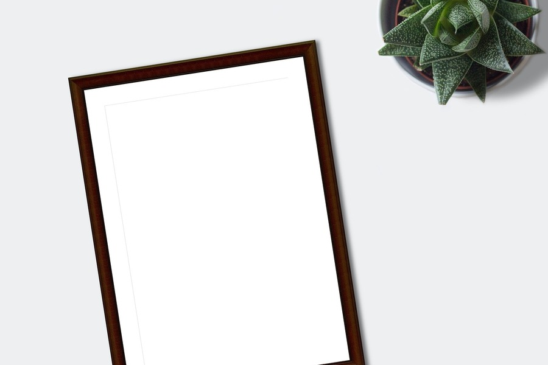

The client needed a single surface for balances, risk signals, and drill‑downs — without every squad inventing new charts or spacing. We started from real workflows, then froze decisions into tokens and documented components.
Challenge
- Inconsistent spacing and type slowed handoff between design and engineering.
- Legacy charts were not keyboard-friendly and failed contrast in dark mode.
- New features required bespoke CSS instead of composition from primitives.
Approach
We introduced semantic tokens for surfaces, borders, and chart series colors. Components were built with empty states, loading skeletons, and focus order tested against real data volumes.

Outcomes
Time-to-ship for net-new analytics views dropped once teams composed from the library. Accessibility audits showed fewer critical issues, and dark mode stayed visually balanced because tokens drove both themes.
Stack & tools
Design system in Figma, Storybook for UI docs, React for implementation, and visual regression checks on critical flows.